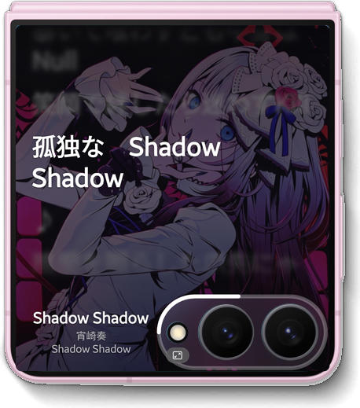

屏幕再小，
听歌也尽兴。
专为小折叠外屏做的音乐播放器。合着手机也能看歌词、切歌，打开手机就是完整的大屏界面。YouTube Music 和网易云音乐都能用。

不同外屏都合适
每家折叠屏的外屏比例都不一样，有偏宽的，有偏长的。Flip Music 会按不同屏幕比例重新排版，不会只是把大屏界面缩小塞进去。
双平台适配
在国内用网易云，在国外用 YouTube Music，设置里随时切换，人在哪都有歌听。App 从不保存密码。
三星 Galaxy Z Flip7 / Flip8 专属特性
1:1 外屏适配
UI 专为 Galaxy Z Flip7 / Flip8 优化，不浪费 4.1 英寸外屏一丁点角落。
跑道形播放进度条
官方做不到的，我们来做：不浪费外屏任何一块空间，不只是摄像头左侧区域，甚至摄像头周围。
小提示三星手机要在外屏打开，先到 设置 › 高级功能 › 实验室 › 外屏上允许的应用，把 Flip Music 加进去。
反馈遇到问题或者有想法，欢迎发邮件到 233.rinne@gmail.com。